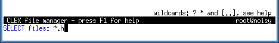

File panel keys:
| alt-+ | select files that match pattern |
| alt-- | deselect files that match pattern |
| alt-* | invert selection |
To specify files to be (de)selected, enter a filename pattern at the appropriate prompt. All files that match the pattern will be selected or deselected respectively.
The directory is re-read when this function is activated and the file list is more than 60 seconds old.
